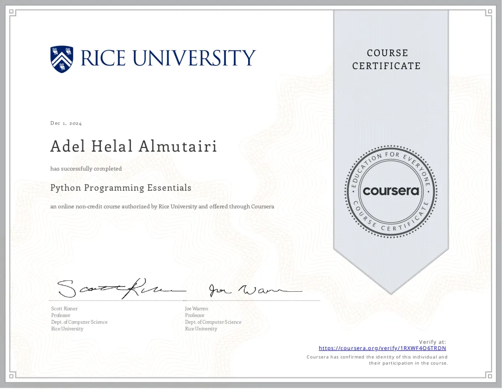

Adel Almutairi
Senior Bioinformatics Specialist at KAIMRC in Riyadh. Genomics, phylogenetics and machine learning for health, from tracing foodborne outbreaks to deep learning on protein sequences.
Summary
I apply computational tools and statistical methods to biological questions, from raw sequencing reads to results that research and public-health teams can act on.
I hold an MSc in Bioinformatics from the University of Exeter and a BSc in Microbiology from King Saud University, and have delivered collaborative work with the Saudi FDA, KFSHRC and several Saudi universities.
- Now
- Senior Bioinformatics Specialist, KAIMRC
- Previously
- Bioinformatics Specialist, Saudi FDA
- Education
- MSc Bioinformatics, University of Exeter
BSc Microbiology, King Saud University - Based in
- Riyadh, Saudi Arabia
Expertise
- Genomics
- Assembly, alignment, annotation, variant calling and population genetics for whole-exome and whole-genome sequencing projects.
- Phylogenetics
- SNP analysis, tree construction and comparative evolutionary studies to trace pathogen origins and relationships.
- Metagenomics
- Community profiling, functional analysis and taxonomic classification for environmental and clinical samples.
- Data science
- Statistical modelling, machine learning, visualisation and narrative reporting with Python, R and HPC systems.
Toolkit
Languages and data
Environment
Methods
Roles
Leading genomic analysis and research collaborations.
-
to present
Senior Bioinformatics Specialist
King Abdullah International Medical Research Center (KAIMRC)
Designing and maintaining computational pipelines to process and analyse biological data.
-
to
Bioinformatics Specialist
Saudi Food and Drug Authority (SFDA)
Led genomic analysis for food safety and public health: outbreak investigations, pathogen characterisation and surveillance monitoring with bioinformatics workflows.
-
Research Collaborator
KSU · KFSHRC · IAU
Bioinformatics support for MSc theses, focused on bacterial genome analysis and antimicrobial resistance gene detection.
Education
-
MSc in Bioinformatics
University of Exeter, United Kingdom
Built a computational workflow to predict transmembrane proteins in NCLDVs and trace their evolutionary relationships, using AlphaFold to cut experimental cost.
-
BSc in Microbiology
King Saud University, Saudi Arabia
Second place, Graduation Project Excellence Award.
Projects
Applied genomics, phylogenetics and machine learning for public health and research.
-
Multi-task Deep Learning Model for TM-SP Prediction (opens the demo on Hugging Face in a new tab)
Predicts transmembrane proteins and signal peptides from sequence alone, with one shared model trained on both tasks.
-
Metagenomics Analysis of Saudi Western Valleys
Identified plastic-degrading and biofilm-forming bacteria in soil metagenomes for environmental applications.
-
Phylogenetic Comparison in Salmonella
Benchmarked SNP-matrix phylogeny against core-genome MSA for Salmonella enterica isolates to improve epidemiological accuracy.
-
Genomic Analyses for MSc Collaborations
Assembly, annotation and analysis for several thesis projects across Saudi research institutions.
-
Clostridium Outbreak Investigation
Used comparative genomics to trace the contamination source of a food-poisoning outbreak linked to Clostridium species.
-
Transmembrane Proteins in Giant Viruses
Detected transmembrane proteins in NCLDVs and explored their evolutionary relationships with structure-aware computational methods.
Certificates
Degrees and professional courses. Select a certificate to view it in full.
-

MSc in Bioinformatics
-

BSc in Microbiology
-

Fundamental Skills in Bioinformatics
Verify on Coursera (opens in a new tab) -

Supervised Machine Learning
Verify on Coursera (opens in a new tab) -

Python Programming Essentials
Verify on Coursera (opens in a new tab) -

Internet of Things

Contact
Open to roles and research collaborations in bioinformatics and genomics.
- Emailadil.bioinfo@gmail.com
- LinkedInadel-almutairi-msc (opens in a new tab)
- PhoneCall me
- CVDownload the PDF
- Based inRiyadh, Saudi Arabia